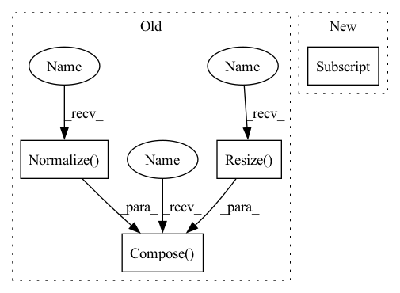

Pattern ID :40639

Before Change
model = choose_models(cfg["MODEL"]["NAME"])(cfg["MODEL"]["SUB_NAME"], pretrained=cfg["EVAL"]["MODEL_PATH"], num_classes=cfg["DATASET"]["NUM_CLASSES"], image_size=cfg["EVAL"]["IMAGE_SIZE"][0])
model = model.to(device)
val_transform = T.Compose(
T.Resize(tuple(map(lambda x: int(x / 0.9), cfg["EVAL"]["IMAGE_SIZE"]))),
T.CenterCrop(cfg["EVAL"]["IMAGE_SIZE"]),
T.ToTensor(),
T.Normalize([0.485, 0.456, 0.406], [0.229, 0.224, 0.225])
)
val_dataset = ImageNet(cfg["DATASET"]["ROOT"], split="val", transform=val_transform)
val_dataloader = DataLoader(val_dataset, batch_size=cfg["EVAL"]["BATCH_SIZE"], num_workers=cfg["EVAL"]["WORKERS"], pin_memory=True)
After Change
def main(cfg):
device = torch.device(cfg["DEVICE"])
model = get_model(cfg["MODEL"]["NAME"], cfg["MODEL"]["VARIANT"], cfg["MODEL_PATH"], cfg["DATASET"]["NUM_CLASSES"], cfg["EVAL"]["IMAGE_SIZE"][0])
model = model.to(device)
_, val_transform = get_transforms(cfg)
In pattern: SUPERPATTERN
Frequency: 3
Non-data size: 4
Instances
Fragment ID: 114915481
Project Name: sithu31296/image-classification
Commit Name: 73c841ee1e7c55eae40dcccc6437b08fea7469bf
Time: 2021-07-07
Author: sithu31296@gmail.com
File Name: tools/val.py
M Class Name: AnonimousClass
N Class Name: AnonimousClass
M Method Name: main(1)
N Method Name: main(1)
M Parent Class:
N Parent Class:
M File Name: tools/val.py
N File Name: tools/val.py
M Start Line: 44
M End Line: 57
N Start Line: 46
N End Line: 50
'>
Before Change
model = choose_models(cfg["MODEL"]["NAME"])(cfg["MODEL"]["SUB_NAME"], pretrained=cfg["EVAL"]["MODEL_PATH"], num_classes=cfg["DATASET"]["NUM_CLASSES"], image_size=cfg["EVAL"]["IMAGE_SIZE"][0])
model = model.to(device)
val_transform = T.Compose(
T.Resize(tuple(map(lambda x: int(x / 0.9), cfg["EVAL"]["IMAGE_SIZE"]))),
T.CenterCrop(cfg["EVAL"]["IMAGE_SIZE"]),
T.ToTensor(),
T.Normalize([0.485, 0.456, 0.406], [0.229, 0.224, 0.225])
)
val_dataset = ImageNet(cfg["DATASET"]["ROOT"], split="val", transform=val_transform)
val_dataloader = DataLoader(val_dataset, batch_size=cfg["EVAL"]["BATCH_SIZE"], num_workers=cfg["EVAL"]["WORKERS"], pin_memory=True)
After Change
def main(cfg):
device = torch.device(cfg["DEVICE"])
model = get_model(cfg["MODEL"]["NAME"], cfg["MODEL"]["VARIANT"], cfg["MODEL_PATH"], cfg["DATASET"]["NUM_CLASSES"], cfg["EVAL"]["IMAGE_SIZE"][0])
model = model.to(device)
_, val_transform = get_transforms(cfg)
'>
Fragment ID: 114915480
Project Name: sithu31296/sota-backbones
Commit Name: 73c841ee1e7c55eae40dcccc6437b08fea7469bf
Time: 2021-07-07
Author: sithu31296@gmail.com
File Name: tools/val.py
M Class Name: AnonimousClass
N Class Name: AnonimousClass
M Method Name: main(1)
N Method Name: main(1)
M Parent Class:
N Parent Class:
M File Name: tools/val.py
N File Name: tools/val.py
M Start Line: 44
M End Line: 57
N Start Line: 46
N End Line: 50
'>
Before Change
self.ignore_label = 255
img_size = (img_size, img_size) if isinstance(img_size, int) else img_size
self.image_transforms = T.Compose([
T.Resize(img_size, interpolation=T.InterpolationMode.BILINEAR),
T.Normalize((0.3257, 0.3690, 0.3223), (0.2112, 0.2148, 0.2115))
])
self.label_transforms = T.Resize(img_size, interpolation=T.InterpolationMode.NEAREST)
if split != "test":
img_path = Path(root) / "leftImg8bit" / split
After Change
self.label_map = np.arange(256)
for id, trainid in self.ID2TRAINID.items():
self.label_map[id] = trainid
img_path = Path(root) / "leftImg8bit" / split
self.files = list(img_path.rglob("*.png"))
'>
Fragment ID: 114915488
Project Name: sithu31296/semantic-segmentation
Commit Name: 66612f96041d5c478f558477efc0b23d246747d4
Time: 2021-08-02
Author: sithu31296@gmail.com
File Name: datasets/cityscapes.py
M Class Name: CityScapes
N Class Name: CityScapes
M Method Name: __init__(4)
N Method Name: __init__(5)
M Parent Class: Dataset
N Parent Class: Dataset
M File Name: datasets/cityscapes.py
N File Name: datasets/cityscapes.py
M Start Line: 19
M End Line: 44
N Start Line: 30
N End Line: 40